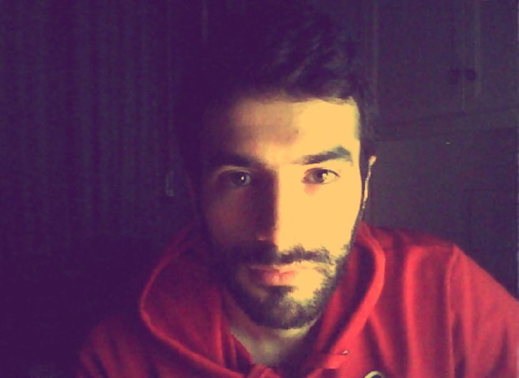

Fabrizio Brioccia (About me)
Software developer & Computer Scientist.
Field of Research
Data Mining, Machine learning, AI
Dev Skills
.Net Framework: WebForm, MVC, API, WPF, TSQL, Sharepoint, CRM Dynamics
Web Dev: Front end - Back end (JS, Bootstrap, jQuery, MondoDB, ...)
Framework and Languages: .Net, PySpark, Hadoop, SQL, Python
Resume in brief
- 2017-present
-
University of Cagliari - M.S. Computer Science
- 2016-2017
-
Maxtrino – Software Developer\Database Architect
- 2014-2016
-
Avanade - Software Developer
Functional Programming Principles in Scala Coursera
- 2009-2013
-
ASL – Intern – Network Monitoring
University of Cagliari - B.S. Computer Science
Interests
Game Development, Functional Programming (OCaml & Scala), Artificial Intelligence (Neural Networks, Natural Language Processing).
